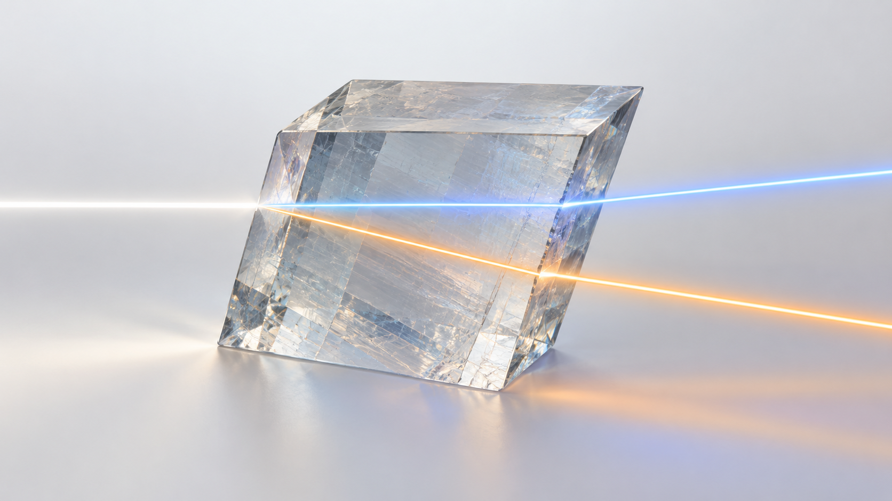
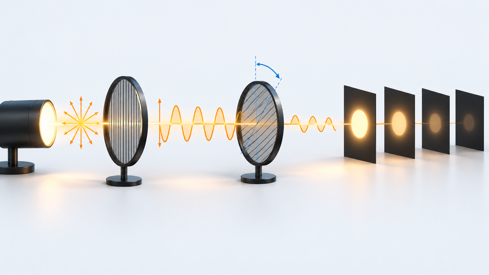
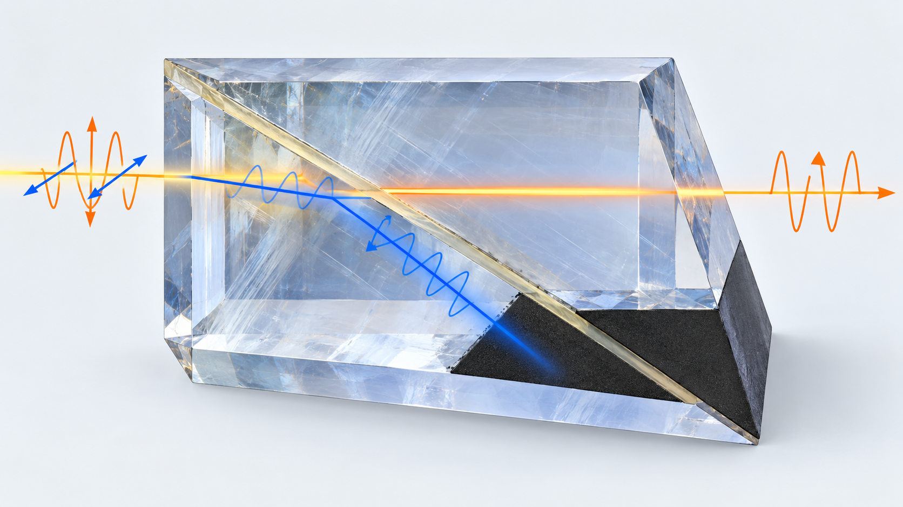
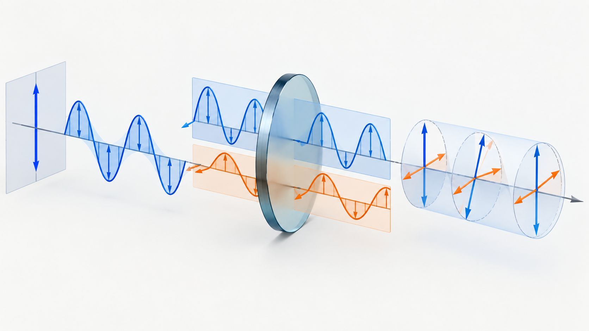

Livello intuitivo: Un cristallo può far viaggiare in modo diverso due componenti della luce. Un analizzatore ne seleziona una combinazione e cambia la luminosità osservata.
Per essere maggiormente rigorosi: La birifrangenza produce ritardi di fase e, in certe geometrie, separazione dei raggi. La lamina a quarto d’onda non rende circolare qualunque polarizzazione in ingresso.
Birifrangenza
In un materiale anisotropo, l’indice di rifrazione dipende dalla direzione di propagazione e dalla polarizzazione. Un fascio può separarsi in un raggio ordinario e uno straordinario, polarizzati su direzioni ortogonali e caratterizzati da velocità di fase diverse.
La separazione non avviene in ogni direzione allo stesso modo. Lungo l’asse ottico del cristallo, i due indici coincidono e la doppia rifrazione scompare.

Legge di Malus
Se luce già polarizzata linearmente, di intensità , incide su un analizzatore il cui asse forma un angolo con la direzione di polarizzazione:
Cosa Vuol Dire?
Livello intuitivo: L’intensità trasmessa è quella iniziale per il quadrato del coseno dell’angolo fra polarizzazione e asse dell’analizzatore.
A 0° passa tutta la luce ideale, a 45° la metà, a 90° zero.
Per essere maggiormente rigorosi: I₀ è l’intensità già polarizzata prima dell’analizzatore, non necessariamente quella prima del primo polarizzatore.
Per la trasmissione è massima; per è idealmente nulla. Se la luce iniziale è non polarizzata, occorre prima considerare la riduzione prodotta dal primo polarizzatore.

Prisma di Nicol
Il prisma di Nicol usa un cristallo di calcite tagliato e ricomposto con uno strato di materiale a indice intermedio. Il raggio ordinario subisce riflessione totale interna e viene eliminato dal percorso utile; il raggio straordinario attraversa il dispositivo. In uscita rimane luce polarizzata linearmente.
I valori degli indici dipendono dalla lunghezza d’onda e dalla temperatura. I numeri presenti nelle slide, circa e per la calcite, vanno quindi intesi come valori indicativi nel visibile.

Lamina a quarto d’onda
Una lamina birifrangente introduce un ritardo di fase tra le componenti lungo l’asse veloce e l’asse lento. Per una lamina a quarto d’onda:
Cosa Vuol Dire?
Livello intuitivo: Una lamina a quarto d’onda ritarda una componente di un quarto di ciclo: la differenza di cammino ottico è /4.
Componenti iniziali uguali, ottenute a 45° rispetto agli assi, possono diventare luce circolare; altrimenti in generale ellittica.
Per essere maggiormente rigorosi: ; t in m; nel vuoto. Il ritardo dipende dalla lunghezza d’onda.
dove . Se la polarizzazione lineare incidente forma con gli assi, le due componenti hanno uguale ampiezza e in uscita si ottiene polarizzazione circolare ideale. Per altri angoli si ottiene in generale polarizzazione ellittica.
